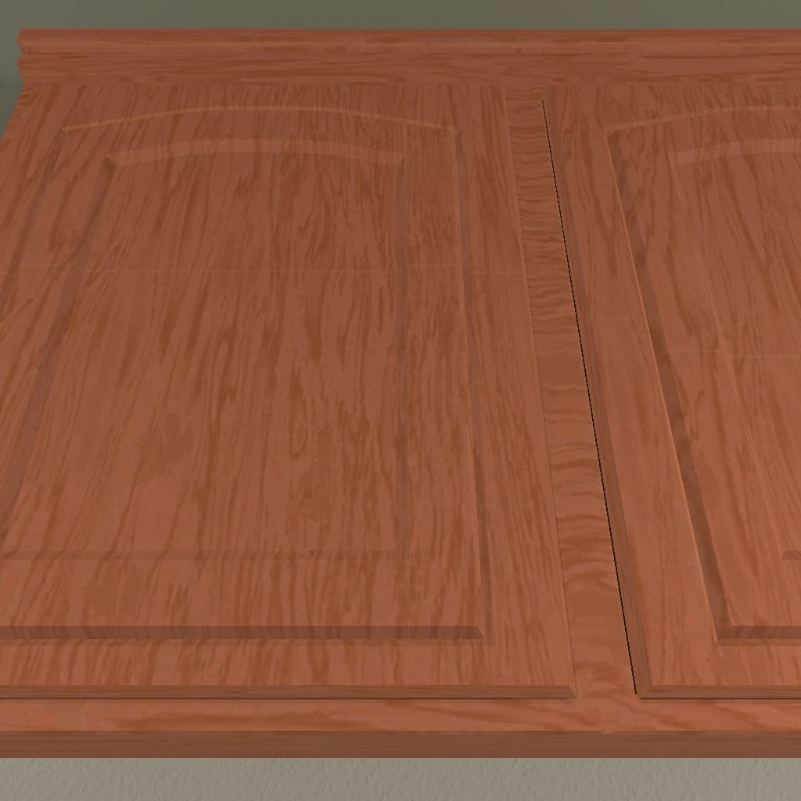
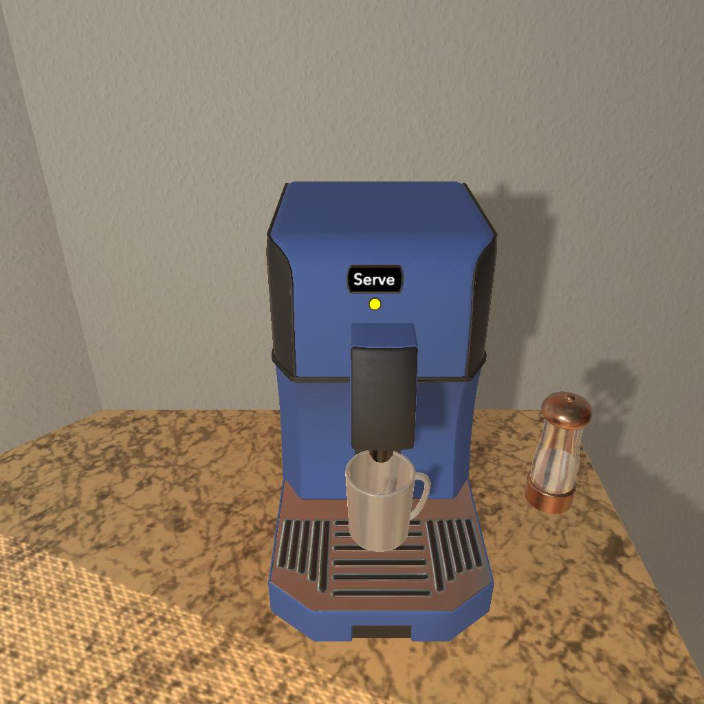

---------------------------------------------------------task: 15---------------------------------------------------------
--------------------------------------------------------------------------------------------------------------------------------------------------------------------
--------------------------------------------------------------------------------------------------------------------------------------------------------------------
Step:--------------------------------------------------------------------------12-------------------------------------------------------------------------------
----------------------------------------
VLM Prompt:
Image1:
Image2:
**Instruction**
1. Analyze the provided images to identify all visible household objects and compare the difference between images (e.h. whether the object is opened or not and taken on hand or not), focusing on those relevant to the task description "cool some mug and put it in coffeemachine."
2. Use the analysis of images and the task hint "The agent must find an object of the desired type, pick it up, go to a fridge, cool the object with the fridge, then find the correct location to place it, and put it down there. The agent does not need to use the fridge button or open the fridge to cool the object, and the agent just needs to do action that is "cool the object with the fridge"." to answer the question: what is the most reasonable action in the choices for the task description "cool some mug and put it in coffeemachine"?
3. Decide and write the answer using the template: The answer is: (i): , where i is the real number. If there is no desired object in images, search every place based on **Initial Observation** to find the object. And if no one is exactly correct, choose a similar answer.
**Initial Observation**
You are in the middle of a room. Looking quickly around you, you can see cabinet (1-15), fridge (1), countertop (1-4), drawer (1-4), microwave (1), toaster (1), coffeemachine (1), garbagecan (1), sink (1), stoveburner (1-3), sinkbasin (1)
**Answer Choices**
(1): go to cabinet 3
(2): go to fridge 1
(3): go to countertop 1
(4): go to cabinet 4
(5): go to cabinet 5
(6): go to cabinet 6
(7): go to cabinet 7
(8): go to drawer 1
(9): go to drawer 2
(10): go to cabinet 8
(11): go to drawer 3
(12): go to cabinet 9
(13): go to cabinet 10
(14): go to drawer 4
(15): go to microwave 1
(16): go to cabinet 11
(17): go to toaster 1
(18): go to cabinet 12
(19): go to cabinet 13
(20): go to cabinet 14
(21): go to cabinet 15
(22): go to countertop 2
(23): go to garbagecan 1
(24): go to countertop 3
(25): go to countertop 4
(26): go to sink 1
(27): go to stoveburner 1
(28): go to stoveburner 2
(29): go to stoveburner 3
(30): go to sinkbasin 1
(31): take mug 1 from coffeemachine 1
(32): take saltshaker 2 from coffeemachine 1
(33): examine coffeemachine 1
**Answer**
Let's think step by step by following the instructions.
----------------------------------------
----------------------------------------
Original Response:
First, we need to cool a mug. In Image2, we can see a mug placed in the coffeemachine. Since the task does not require using the fridge button or opening the fridge and we just need to perform an action to "cool the object with the fridge," we can assume the agent will perform a 'cool' action near the fridge.
The next step is to put the cooled mug in the coffeemachine. In Image2, we can see the coffeemachine with a mug already in place, but for the task, we need to assume that the mug needs to be cooled first and then placed in the coffeemachine.
Based on these steps and the Initial Observation provided, the most reasonable action to perform the task "cool some mug and put it in coffeemachine" would be to first take the mug from the coffeemachine and then go to the fridge to cool it.
Looking at the answer choices, taking the mug from the coffeemachine is option (31): take mug 1 from coffeemachine 1. The next step, going to the fridge, is option (2): go to fridge 1.
The answer is: (31): take mug 1 from coffeemachine 1, and then (2): go to fridge 1.
----------------------------------------
----------------------------------------
>>> Refine Original VLM Response and Get Pure Action: take mug 1 from coffeemachine 1, and then (2): go to fridge 1
----------------------------------------
-----------------------------------------------------------------
Running time: 20.97464871406555 seconds
Total Money: 7.138520000000005
-----------------------------------------------------------------
-----------------------------------------------------------------
Text Observation:Nothing happens.
-----------------------------------------------------------------
UNSUCCEED